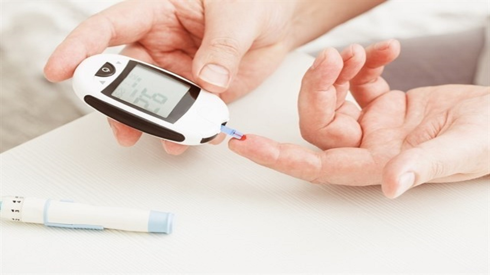

DiabetesDiabetes, often referred to by doctors as diabetes mellitus, describes a group of metabolic diseases in which the person has high blood glucose (blood sugar), either because insulin production is inadequate, or because the body's cells do not respond properly to insulin, or both. Patients with high blood sugar will typically experience polyuria (frequent urination), they will become increasingly thirsty (polydipsia) and hungry (polyphagia). Over time, having too much glucose in your blood can cause health problems. Although diabetes has no cure, you can take steps to manage your diabetes and stay healthy. Sometimes people call diabetes “a touch of sugar” or “borderline diabetes.” These terms suggest that someone doesn’t really have diabetes or has a less serious case, but every case of diabetes is serious. |
 |
| Drugs used in diabetes treat diabetes mellitus by lowering the glucose level in the blood. With the exceptions of insulin, exenatide, liraglutide and pramlintide, all are administered orally and are thus also called oral hypoglycemic agents or oral antihyperglycemic agents. There are different classes of anti-diabetic drugs, and their selection depends on the nature of the diabetes, age and situation of the person, as well as other factors. |
|
Dr. A S Prakash Experience : 5 Years Apollo Spectra Hospitals Koramangala Bangalore MON-SAT | 09:30 AM-10:00 AM |
| Homeopathy is an alternative medical system. It’s also called homeopathic medicine. Homeopathy is based on the idea that a condition can be treated with a diluted amount of a natural substance that’s been shown to cause symptoms of the disease in healthy people. This is the homeopathic principle of “like cures like.” |
|
Dr. Naveen A Experience : 25 Years Apollo Spectra Hospitals Koramangala Bangalore MON-SAT | 08:30 AM-9:30 9M |
| Ayurvedic treatments for diabetes mellitus People with diabetes and other chronic diseases often use complementary and alternative medicines. This review examines the efficacy and safety of the use of various Ayurvedic treatments for diabetes mellitus. We found seven trials which included 354 participants (172 on treatment, 158 on control, 24 could not be classified). All these studies included adults with type 2 diabetes mellitus. |
Diabetes medications in Ayurveda are
|
Dr. Bhuvaneswari Experience : 15 Years Apollo Spectra Hospitals Koramangala Bangalore MON-SAT | 08:30 AM-9:30 9M |
| Traditional medicine (also known as indigenous or folk medicine) comprises medical aspects of traditional knowledge that developed over generations within various societies before the era of modern medicine. The World Health Organization (WHO) defines traditional medicine as "the sum total of the knowledge, skills, and practices based on the theories, beliefs, and experiences indigenous to different cultures, whether explicable or not, used in the maintenance of health as well as in the prevention, diagnosis, improvement or treatment of physical and mental illness |
Here are some easy ways to lower blood sugar levels naturally:
|
|